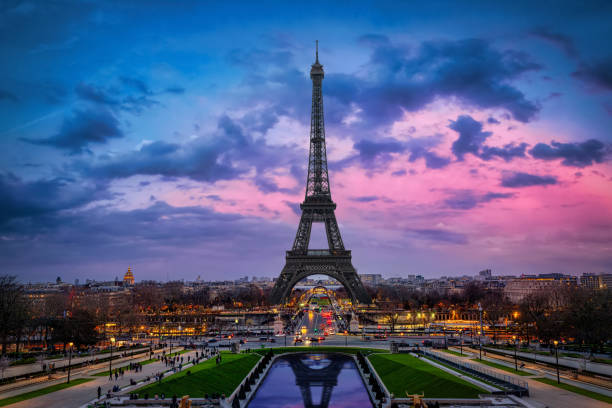
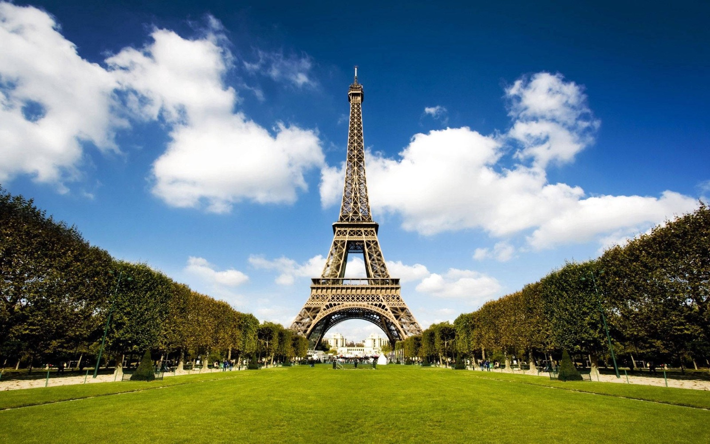

O mais icônico ponto turístico da Europa é, sem dúvida, a Torre Eiffel. Construída em 1889, a silhueta de 300 metros de altura no coração da cidade se tornou um símbolo mundial. Por receber mais de seis milhões de visitas por ano, o monumento está sempre cheio. Ainda mais no verão, época que atrai mais gente para a cidade – se você for a Paris nesta estação, compensa apostar em horários alternativos para a visita. Subir ao topo da Torre Eiffel é uma das principais atrações na cidade, principalmente por quem busca onde assistir o pôr do sol em Paris. Ter uma visão panorâmica do destino lá de cima é uma experiência única. A torre é dividida em três níveis, e o meio mais disputado para subi-los é o elevador (sempre com filas). Porém, se estiver com disposição, é possível ir pelas escadas até o segundo segundo nível – são mais de 1.500 degraus e de lá você deve pegar um elevador para o ponto mais alto. As duas opções são pagas, porém ir de escada é mais barato e mais rápido! E, depois de conhecer o monumento por dentro, aproveite para fazer um piquenique no Jardim do Trocadéro, ao redor da torre, se o clima estiver propício.